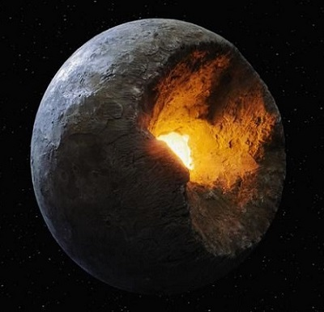

Dawn Treader
Commander: Long range comms are down
Commander: Jump engines are still warm we can jump
Commander: Look at the planet it's?
Deflectors are overheating

Commander we are taking damage
We jumped in to the middle of an asteriod field
Deploying repair bots
We jumped in to the middle of an asteriod field
Deploying repair bots
Commander We are right where we are supposed to be
This asteriod field is not suposed to be here
Manovering to aviod
This asteriod field is not suposed to be here
Manovering to aviod
Commander I am getting some strange reading
Reccommend you deploy the sensors
More detailed reads are needed
Reccommend you deploy the sensors
More detailed reads are needed
Commander our deflector lasers cannot cope
I am deploying spatial charges
should buy us some time
Tell Nav get us out of here
I am deploying spatial charges
should buy us some time
Tell Nav get us out of here
×
HAL 9000
I am recieving information from the drones
We are where we are supposed to be Commander
However this asteriod field was not here when viewed from the Sagan telescope
Given the speed of light this has happend in the last six years
Commander I have scanned the debris field, there are key elemnts in strange quanities
I should be seeing about 27% Aluminium 5% Calcium were this a standard rocky planet
I only read less than 1% Aluminium and I cannot sense any Calcium
I am also detecting background radiation similar to our spatial charges
but on a much larger scale
Commander one posible explanation is this planet has been mined!
Reccommend we jump commander, nothing left here to colonise
Press to Deploy long range sensor drones
Press to Jump to FTL speed
Earth's first faster than light Starship